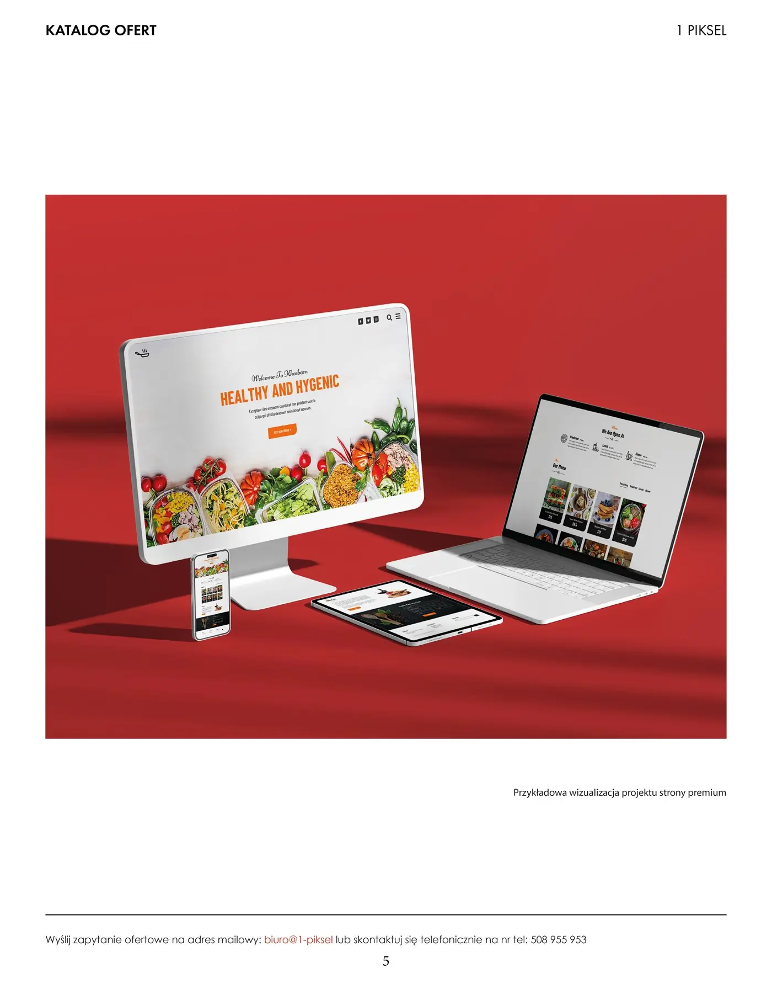
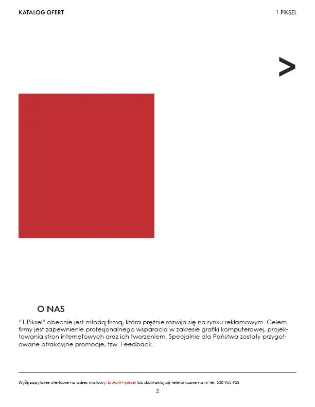
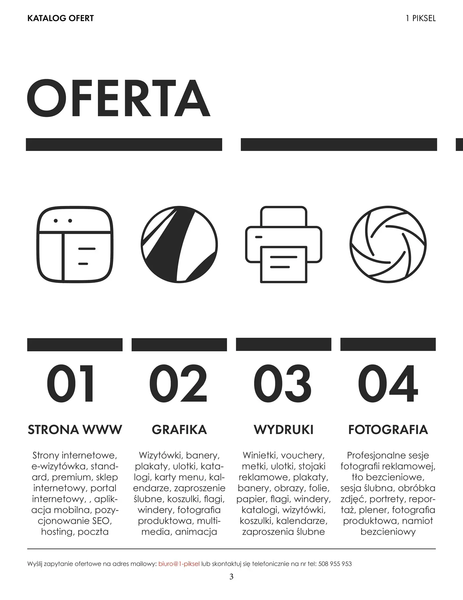
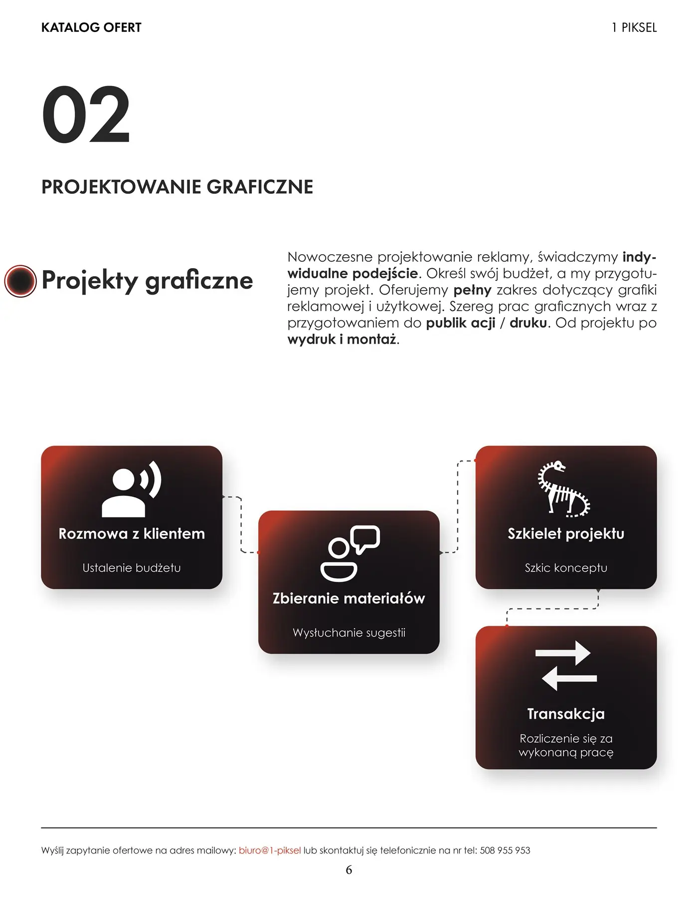
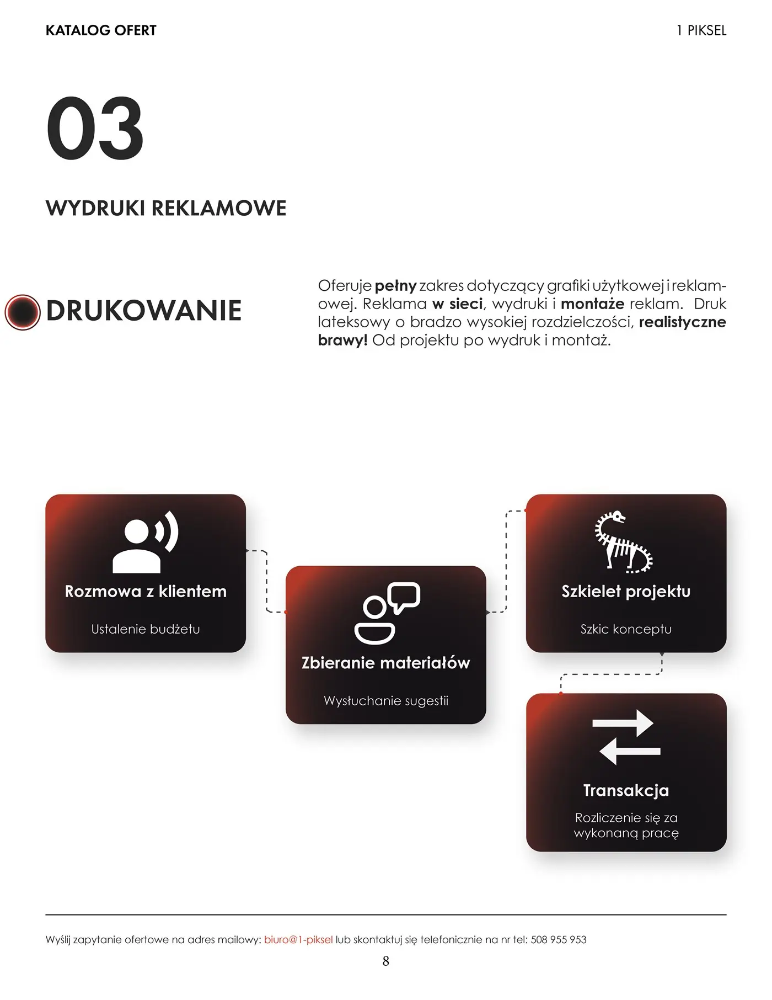
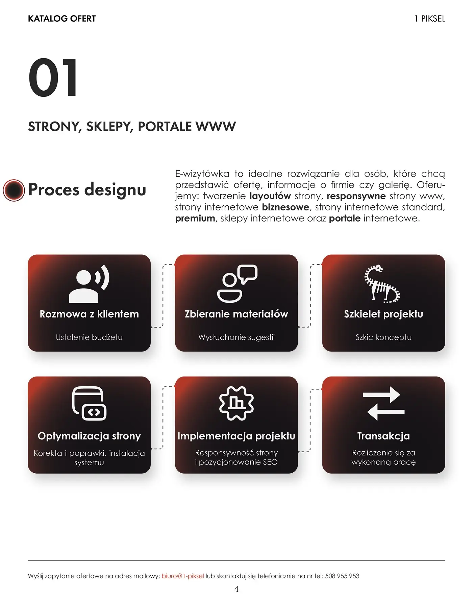
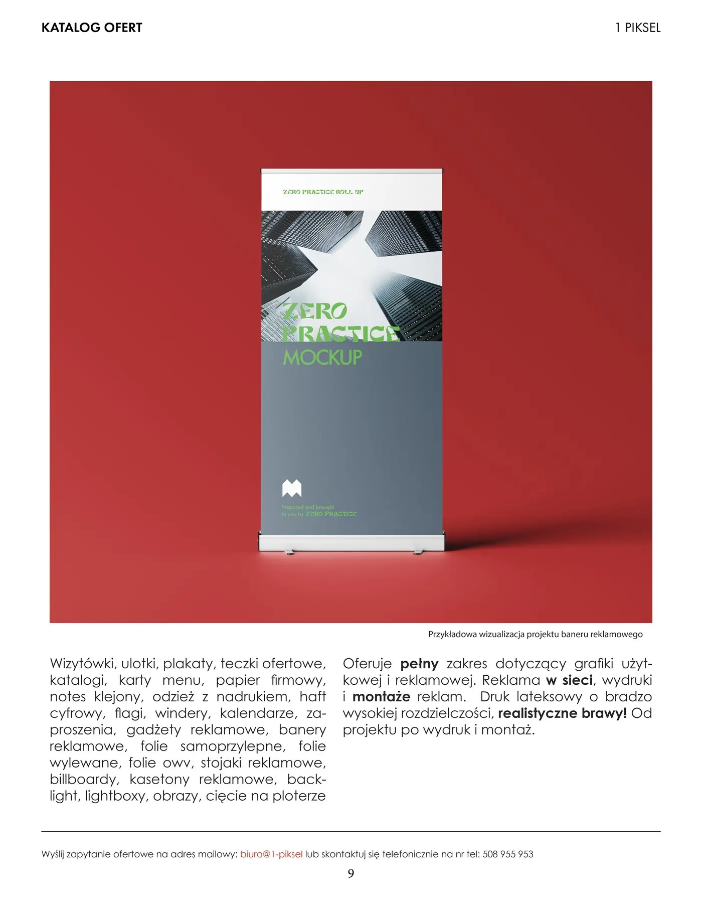
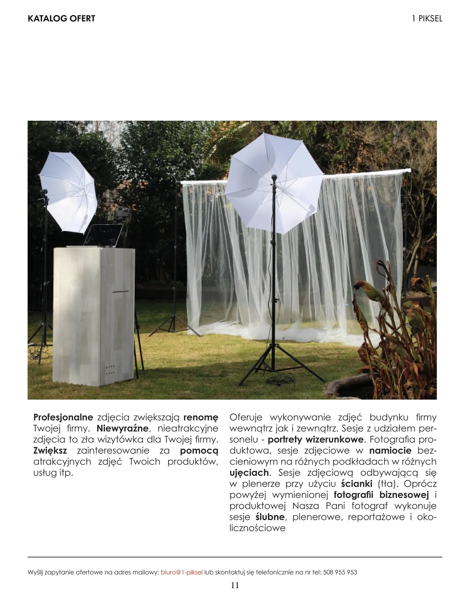

Transformacja rozproszonych usług agencji w prestiżowy, 11-stronicowy system wydawniczy. Od bezkompromisowej siatki modularnej po fizyczny druk cyfrowy i nośniki wielkoformatowe, narzędzie zaprojektowane do budowy autorytetu i domykania kontraktów biznesowych.
„Katalog B2B to nie broszura reklamowa, lecz architektura zaufania. Klient biznesowy w kilkanaście sekund musi zrozumieć proces, poczuć jakość rzemisła i podjąć decyzję o partnerstwie.”
Alex Grubba, Creative DirectionStudio 1 Piksel to dynamicznie rozwijająca się agencja kreatywna, której kompetencje obejmują cztery kluczowe filary: projektowanie stron www, branding, druk wielkoformatowy oraz fotografię biznesową. Dotychczasowa komunikacja cierpiała jednak na brak spójnego ekosystemu prezentacji, co utrudniało cross-selling i obniżało postrzeganą wartość zleceń.
Celem projektu było stworzenie fizycznego, bezkompromisowego katalogu ofertowego, który w ułamku sekundy eliminuje dystans między agencją a decydentem korporacyjnym. Dokument musiał nie tylko prezentować cenniki, ale przede wszystkim edukować klienta, uświadamiać złożoność procesu projektowego i budować wizerunek zaufanego doradcy technologiczno-kreatywnego.
Największe wyzwanie polegało na unifikacji czterech skrajnie różnych procesów w jeden żelazny rygor graficzny. Każda usługa, od developmentu stron po fotografię plenerową, musiała funkcjonować jako integralny element tej samej, dojrzałej machiny projektowej.




Świadoma redukcja do surowej bazy węgla i papierowej bieli przełamana dynamicznym cynobrem (#B23929). Czerwień nie pełni roli dekoracyjnej, lecz służy jako wizualny wskaźnik priorytetów, akcentując kluczowe etapy procesu i punkty decyzyjne w cennikach.
Futura jako ucieleśnienie bauhausowskiej geometrii i modernistycznej czytelności. Masywne, architektoniczne nagłówki w kontrapunkcie do precyzyjnie rozświetlonego body textu nadają publikacji ton nowoczesnego magazynu biznesowego.

Karty procesowe stanowią serce całego systemu. Każdy z czterech działów operuje identyczną sekwencją kroków: od briefu, przez prototypowanie, po release. Dzięki powtarzalności klient natychmiast czuje bezpieczeństwo i pełną przewidywalność kosztowo-czasową.
Prezentacja stron w ich naturalnym środowisku: pełne, dwustronicowe rozkładówki w skali A4/A3, ukazujące rzeczywiste proporcje papieru, hierarchię łamania tekstu i fizyczne realizacje w terenie bez kadrowania.


Katalog B2B to narzędzie transakcyjne, nie album artystyczny. Bezwzględna hierarchia typograficzna, wyróżnione etapy współpracy oraz czytelne zestawienia cenowe eliminują niepewność i prowadzą klienta wprost do kontaktu.
Stosowanie identycznego schematu diagramu procesu we wszystkich czterech działach buduje wizerunek dojrzałej instytucji. Powtarzalność kodu wizualnego budzi szacunek i potwierdza najwyższy standard procesowy.
W świecie przeładowanym krzykliwymi ulotkami, celowo zaprojektowany oddech i szerokie marginesy natychmiast pozycjonują ofertę w segmencie premium. Zaprojektowana pustka komunikuje pewność siebie i jakość.